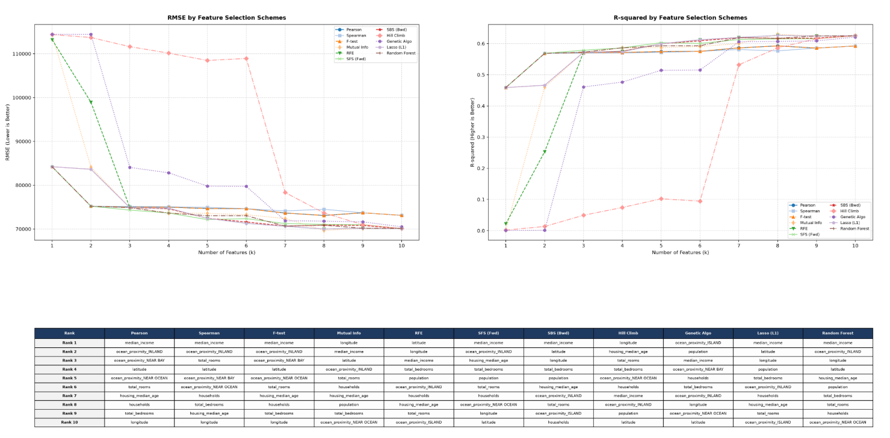

AI Engineer Learner • Data Analyst • Product Planning
結合商業經驗與 AI 技術，打造更好的數位決策。
Turning Business Experience into AI Solutions.
我是陳嘉茵，擁有14年以上商品企劃、業務開發及客戶管理經驗。 目前於中興大學學習 AI 人工智慧與資料分析。 希望將 AI、資料分析與商業經驗結合，協助企業完成數位轉型。

使用 Python 與 Scikit-learn 建立房價預測模型。
使用 ESP32、DHT11、FastAPI 與 SQLite 建立溫溼度監測系統。
依照心情、預算、人數與飲食偏好推薦餐廳與菜色。
中興大學 AI 人工智慧與資料分析班
iPAS AI 規劃師（準備中）
GitHub：chiayin0222-spec